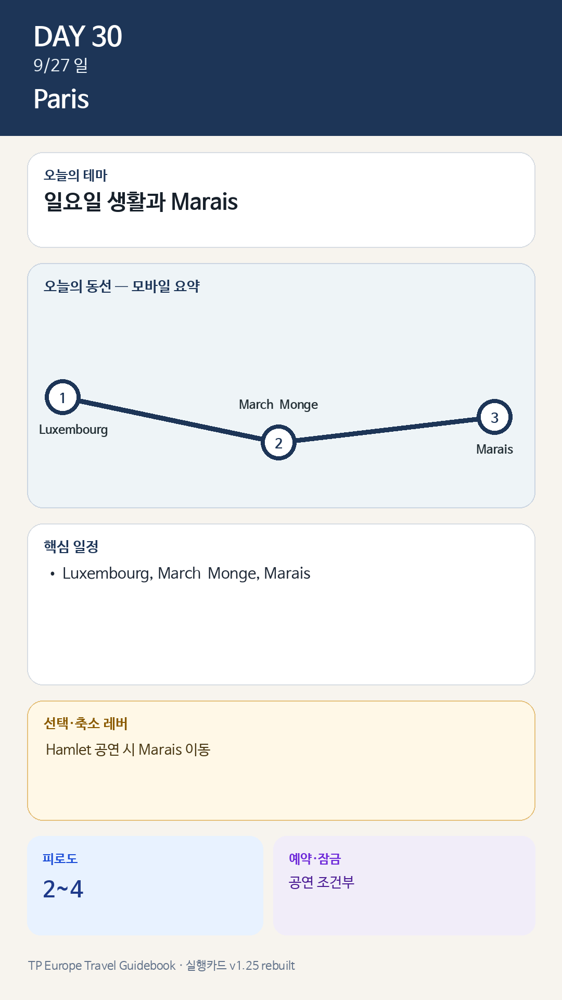

Day 30 · 9/27 일 · Paris

카드의 지도영역은 일정 순서를 보여주는 개요이며 내비게이션이 아닙니다. 실제 도보·운전 경로는 Google Maps에서 다시 계산하세요.
시간표
| 시간 | 기본안 | 공연 대체안 |
|---|---|---|
| 08:30–09:30 | Luxembourg 러닝·산책 | 동일 |
| 10:00–11:15 | Marché Monge 장보기 | 10:30까지 압축 |
| 12:00 | 숙소 점심 | Bastille 근처 이른 점심 |
| 14:00–16:30 | Marais 골목·Place des Vosges·Carnavalet 선택 | Hamlet 14:30, Opéra Bastille 선택 |
| 16:30–18:00 | Enfants Rouges 또는 카페 | 공연 후 Bastille·Arsenal 산책 |
| 저녁 | 숙소식 또는 Café des Musées | 공연 후 가벼운 식사 |
이 날의 메모
일요일 생활과 Marais — 공연을 넣어도, 넣지 않아도 완전한 하루
피로도: 기본 2–3 / 공연 4. 판단: Hamlet 표가 있으면 Marais를 10/2로 이동한다. 공연이 없으면 박물관은 Carnavalet 한 곳만 선택한다.
꼭 해볼 것
- 일요일 오전 파리 시장의 가족·주민 리듬을 관찰한다.
- Place des Vosges 회랑에서 커피 한 잔 또는 30분 휴식.
- 숙소 저녁을 ‘실패한 일정’이 아니라 생활체험으로 받아들인다.
오늘 확인할 것
- 핵심 실행
- 일요일 생활·Marais
- 권장 출발
- 느린 시작
- 완충
- 공연 시 오후 2시간 보호
- 최고 리스크
- 일요일 혼잡·공연조건
- 우선 삭제
- Marais 일부
- 대체안
- 공원·시장 중심
- 식사·휴식
- 시장·Marais
- 잠금 필요
- 공연 조건부